FATE：面向异构 LLM 工作流的未来状态感知调度
摘要。LLM 应用越来越以异构多阶段工作流执行，而不是孤立 inference call。在这些 workflow DAG 中，调度决策不仅影响当前 ready stage，还会影响下游继承的执行状态，包括 model residency、parent-output locality、prefix reuse 和 future device reachability。现有 serving 与 DAG-scheduling policy 多数只单独优化当前队列状态、placement cost 或 reuse signal，可能破坏有用状态并增加端到端延迟。FATE 是一种 future-state-aware scheduler，结合 CP-SAT frontier planner、horizon-aware candidate scoring、bounded multi-device shard execution 与 state-conditional cost estimation。它不求解单体 full-DAG 问题，而是在当前 ready frontier 上反复规划，并根据即时成本和诱导出的下游状态为 assignment 打分。在 WfCommons-derived workflow-DAG benchmark 与 controlled prefix-reuse benchmark 上，FATE 优于 practical heuristics、classical DAG scheduling 及近期 workflow-serving policy 的 proxy adaptation；workflow-DAG benchmark 上 normalized makespan 和 normalized P95 latency 分别为 0.675 和 0.677，相比 RoundRobin 降低 32.5% 和 32.3%。
1 引言
近期 LLM serving 技术显著提升了单次 inference call 的效率，例如 paged KV-cache 管理、structured language-program execution、prefill/decode scheduling 和 architectural disaggregation。当 workload 可以近似为单次模型调用或弱耦合调用序列时，这些技术非常有效。
现代 LLM 应用正在打破这一抽象。一个用户请求可能触发 retrieval、decomposition、routing、tool use、code execution、verification、aggregation 和 post-processing。Agentic assistant 与软件工程 assistant 中，高层请求常被拆成 planning、implementation、testing、review 和 repair 等阶段。它们自然形成带异构 stage、异构模型和显式跨阶段依赖的 DAG。
因此调度问题也发生变化。传统 serving 中调度器主要响应队列状态；在异构 workflow serving 中，调度器还会塑造下游 stage 继承的 execution state。把一个 stage 放在不同 device 上，可能保留 model residency、避免未来 transfer、改善 parent-child colocation，或保留可复用 prefix-related state。相反，过度追求当前负载均衡可能破坏对端到端 latency 更重要的 locality。
FATE（Future-stATE-aware scheduling）主张调度不应只优化即时执行效率，还应优化 future-state preservation。它在有限 downstream horizon 内估计当前 frontier assignment 的后果，但只提交当前 frontier，并在状态更新后继续推进。
2 问题形式化
系统在线服务动态 workflow 实例集合 \(W_{t}\)。每个 workflow 是 DAG G=(V,E)，节点 v 表示 workflow stage，有向边 (u,v) 表示 v 必须接收 u 的输出后才能开始。每个 stage v 具有模型类型 m(v)、eligible device set A(v)、bounded multi-device shard degree R(v)、base runtime profile \(c_{v}\)、stage-local feature ϕ(v)、parent set Pa(v) 和 child set Ch(v)。
执行状态 \(s_{t}\) 包含四类信息：\(\rho_{t}\) 表示每个 device 上的 model residency；\(\kappa_{t}\) 表示 prefix/cache 相关可复用 metadata；\(\ell_{t}\) 记录已完成 parent output 的 device location；\(\tau_{t}\) 记录 device availability time。Ready set 是 parent 全部完成的 stage 集合；feasible candidate set 是在当前资源约束下可把 ready stage 放到 eligible device 上的 assignment。
3 方法
FATE 由三个交互组件组成：frontier CP-SAT planner with horizon-aware candidate scoring、commit-and-advance schedule construction procedure，以及 state-conditional cost and scoring model。Planner 只在当前 ready frontier 上求解，不把未来层级引入显式 CP-SAT 变量；未来层级通过 scoring 影响当前决策。
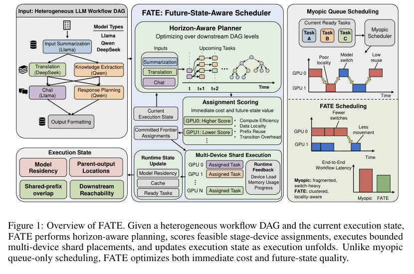
在每个 planning step j，FATE 针对当前 ready frontier \(R_{j}\)、每个 shard slot k 和 eligible device d 引入二元变量 \(y_{v,k,d}\)，表示 stage v 的第 k 个 shard 是否放在 device d 上。目标最大化 frontier-planning score Ψ(v,k,d | \(s_{t}\),H)，其中 H 是 downstream lookahead horizon。约束保证每个 device 在一次 frontier planning wave 中最多接收一个 shard-slot assignment，每个 shard slot 最多被分配给一个 device，并且高编号 shard 只能在低编号 shard 已启用时选择。
状态感知打分由两部分组成：即时运行成本与未来状态价值。成本项包括等待、模型切换、跨 device transfer；收益项包括 parent colocation、prefix/cache reuse、bounded shard parallelism 以及保留下游结构 locality。State-conditional cost estimator 给出校正成本：
调度流程先构造 ready frontier，计算每个候选的校正成本和 horizon-aware score，用 CP-SAT 求解当前 frontier placement，然后把已选 assignment materialize 到 committed action pool。Runtime executor 再根据 dependency readiness 和 device availability 发出 queued actions。当前 frontier 耗尽后，系统更新 workflow state 并重复。
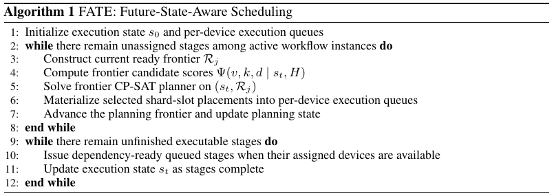
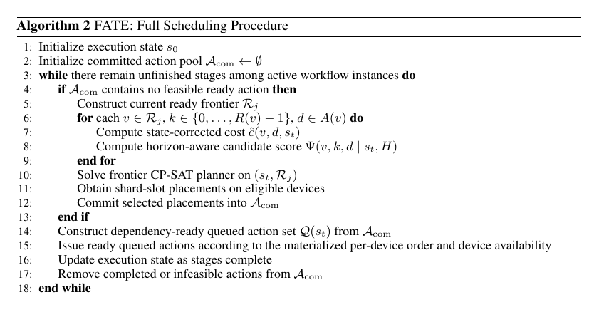
4 实验
FATE 在两个 benchmark family 上评估。第一类从 WfCommons/WfInstances 派生 workflow-DAG benchmark：解析 JSON workflow description，构造真实依赖结构，再把 raw workflow DAG 提升为 LLM-stage execution graph。第二类是 controlled prefix-reuse benchmark，通过固定 workflow template 和可控 shared-prefix repeat ratio 检查 prefix reuse 是否能解释收益。
比较方法包括 RoundRobin、KVFlow-style future-reuse-aware cache policy、Helix-style heterogeneity-aware policy、HEFT classical DAG scheduling baseline 和 Halo workflow-serving baseline。主指标是 normalized makespan 与 normalized P95 query completion latency，均相对 RoundRobin 计算并跨实例取几何平均。机制诊断指标包括 X-Dev Edge、Cache Score 和 Model Cont.。
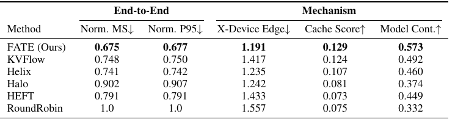
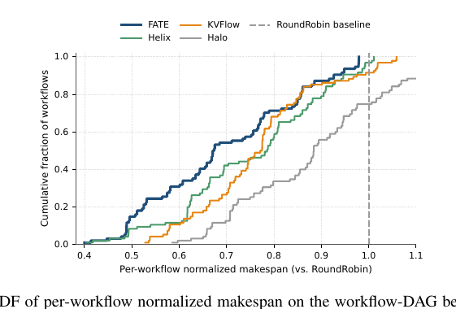
表 1 显示，FATE 在 workflow-DAG benchmark 上取得最佳端到端性能：normalized makespan 为 0.675，优于 Helix 的 0.741、KVFlow 的 0.748、HEFT 的 0.791、Halo 的 0.902 与 RoundRobin 的 1.000；normalized P95 latency 为 0.677。机制指标也显示 FATE 的 X-Dev Edge 更低、Cache Score 和 Model Cont. 更高，说明它减少跨 device parent dependency、增强 prefix/cache affinity 并保持 model residency continuity。
图 2 的分布视角确认，aggregate improvement 不只是少数有利案例驱动；FATE 将大量 workflow 推向更低 normalized makespan。所有 CP-SAT solve 在评估 workload 下均低于 0.08s，相对端到端 workflow completion time 很小。
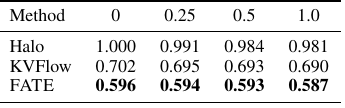
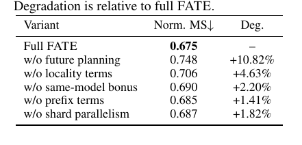
Controlled prefix reuse 中，FATE 在所有 repeat ratio 下最强，normalized makespan 保持在 0.587 到 0.596 之间。KVFlow 具有竞争力，但仍稳定落后，说明 prefix reuse 单独不能主导端到端 workflow performance。消融显示，移除 future planning 的退化最大，从 0.675 变为 0.748，说明主要收益来自 downstream lookahead；移除 locality terms、same-model bonus、prefix terms 和 shard parallelism 也都造成不同程度退化。
5 相关工作
本文与 LLM serving systems、workflow/agent serving、DAG scheduling、KV-cache/prefix reuse、heterogeneous serving 相关。已有系统改善单次调用效率或程序级执行，但多数没有同时显式处理异构 workflow DAG 中的 model residency、parent-output locality、prefix state、bounded shard execution 与未来可达性。
6 局限性
FATE 的评估依赖 workflow-DAG benchmark 和 proxy runtime model，不能直接证明所有真实 production agent workload 上都有相同收益。CP-SAT frontier planning 的开销在本文规模下可控，但若 frontier 极大或硬件状态变化更快，仍需进一步工程优化。FATE 也不改变模型能力本身，只优化服务调度；其收益依赖底层 executor 能暴露足够的状态和控制接口。
7 结论
本文提出 FATE，一种用于异构 LLM workflow 的 future-state-aware scheduler。FATE 将模型驻留、父输出位置、prefix/cache 可复用状态和未来 device reachability 作为调度目标的一部分，通过 horizon-aware frontier planning 和 state-conditional scoring 在当前决策中保留下游有用状态。实验表明，FATE 在 workflow-DAG benchmark、controlled prefix-reuse 与多项消融和鲁棒性测试中均表现稳定，说明 future-state preservation 是异构 LLM workflow serving 的有效调度目标。
附录 A 技术细节
附录给出完整符号表、扩展问题形式化、expanded scheduling score、state-conditional cost model 和完整过程描述。符号表强调 workflow/execution-state 与 planning/scoring/cost 两组变量：前者包括 \(W_{t}\)、G、R(v)、\(\rho_{t}\)、\(\kappa_{t}\)、\(\ell_{t}\)、\(\tau_{t}\) 等，后者包括 ready frontier \(R_{j}\)、lookahead horizon H、assignment variable \(y_{v,k,d}\)、frontier score Ψ、runtime scheduling score S 以及各类成本/收益项。
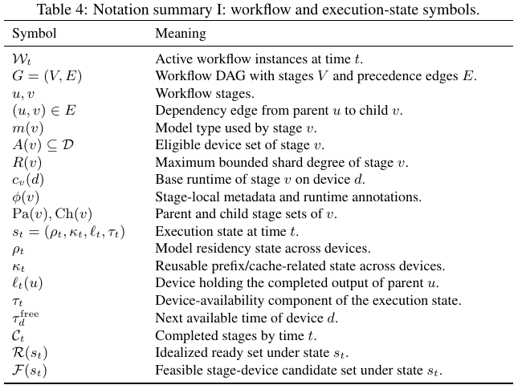
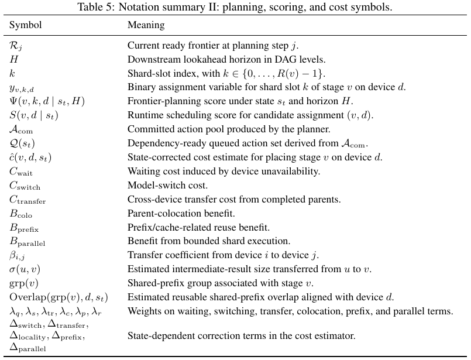
附录 B Baseline 适配
为在共同 execution substrate 下比较 scheduling logic，作者实现所有 baseline 于同一 serving stack。Halo 被忠实复现为原始 workflow-serving scheduling policy；KVFlow-style 保留 future-step-aware prefix priority、cache retention 与 same-model affinity；Helix-style 保留 heterogeneity-aware earliest-finish placement 与 transfer/switch-aware assignment；HEFT 作为 classical heterogeneous DAG scheduling baseline；RoundRobin 简单轮转 device。
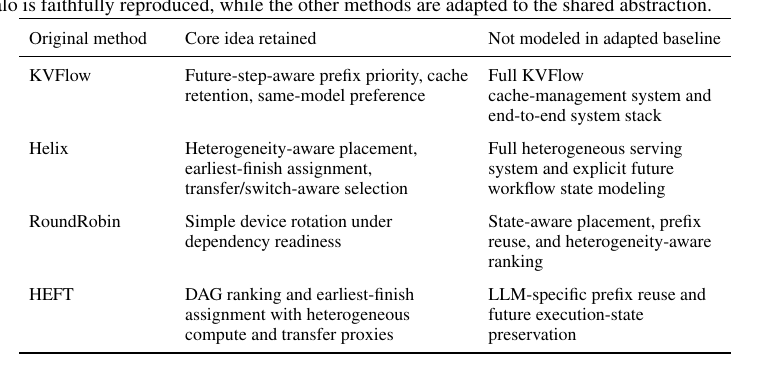
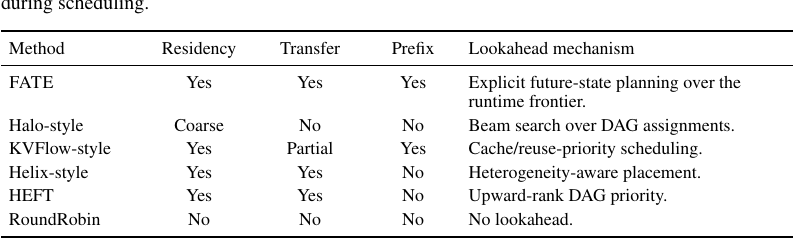
附录 C-D 额外实验
额外实验给出 benchmark construction、metrics aggregation、ablation definitions、evaluation pipeline、reproducibility details，以及 per-family breakdown、controlled conflict stress test、variance/stability、hyperparameter sensitivity、proxy-cost perturbation 和 solver overhead。
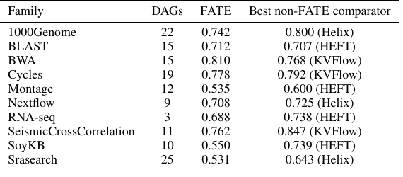
按 family 分解显示，FATE 在多数 family 上优于最强非 FATE baseline；少数 family（例如 BWA、Cycles）中最佳非 FATE comparator 接近或更优，但总体几何平均仍支持 FATE 的主结论。
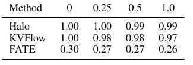
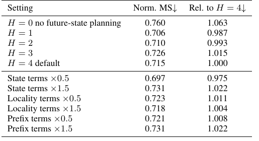
Controlled conflict suite 故意让模型专用 stage 在链上交替出现，使即时 parent locality 与未来 model residency 发生冲突。FATE 在 repeat ratio 为 0 时已显著领先，说明收益并非仅来自 cache reuse。超参数实验显示，在 H 与 scoring weight 扰动下性能保持在窄范围内，FATE 的行为不是由单一“magic weight”解释。
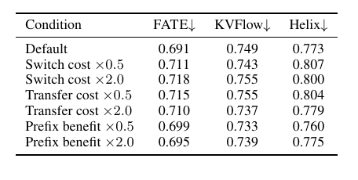
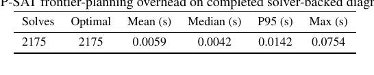
Proxy-cost perturbation 进一步测试 FATE 是否依赖某个 runtime proxy profile 校准。FATE 在所有 perturbation 下仍最强，normalized makespan 从默认 0.691 到最大 0.718，变化有限。Solver overhead 中，2175 次 CP-SAT frontier solve 全部返回 OPTIMAL，mean 0.0059s、median 0.0042s、p95 0.0142s、max 0.0754s，且 objective gap 为 0。
Broader Impacts
该工作研究异构 LLM workflow serving system 的调度。潜在正面影响包括提升 serving efficiency、减少资源浪费、降低 workflow-based LLM 应用的成本与能耗，让复杂 workflow 更容易被研究者和中小组织使用。它不引入新的模型能力、数据收集机制或面向用户应用；但效率提升也可能增加总服务需求，部分抵消单次请求节能效果。合适的缓解方式包括在已有安全策略、访问控制、监控、速率限制和隐私保护系统内使用该调度器。
参考文献
References
[1] Woosuk Kwon, Zhuohan Li, Siyuan Zhuang, Ying Sheng, Lianmin Zheng, Cody Hao Yu,
Joseph Gonzalez, Hao Zhang, and Ion Stoica. Efficient memory management for large language
model serving with pagedattention. In Proceedings of the 29th symposium on operating systems
principles, pages 611–626, 2023.
[2] Lianmin Zheng, Liangsheng Yin, Zhiqiang Xie, Chuyue Sun, Jeff Huang, Cody H Yu, Shiyi
Cao, Christos Kozyrakis, Ion Stoica, Joseph E Gonzalez, et al. Sglang: Efficient execution of
structured language model programs. Advances in neural information processing systems, 37:
62557–62583, 2024.
[3] Amey Agrawal, Nitin Kedia, Ashish Panwar, Jayashree Mohan, Nipun Kwatra, Bhargav Gula-
vani, Alexey Tumanov, and Ramachandran Ramjee. Taming throughput-latency tradeoff in
llm inference with sarathi-serve. In 18th USENIX symposium on operating systems design and
implementation (OSDI 24), pages 117–134, 2024.
[4] Yinmin Zhong, Shengyu Liu, Junda Chen, Jianbo Hu, Yibo Zhu, Xuanzhe Liu, Xin Jin, and Hao
Zhang. Distserve: Disaggregating prefill and decoding for goodput-optimized large language
model serving. In 18th USENIX Symposium on Operating Systems Design and Implementation
(OSDI 24), pages 193–210, 2024.
[5] Michael Luo, Xiaoxiang Shi, Colin Cai, Tianjun Zhang, Justin Wong, Yichuan Wang, Chi Wang,
Yanping Huang, Zhifeng Chen, Joseph E Gonzalez, et al. Autellix: An efficient serving engine
for llm agents as general programs. arXiv preprint arXiv:2502.13965, 2025.
[6] Gohar Irfan Chaudhry, Esha Choukse, Haoran Qiu, Íñigo Goiri, Rodrigo Fonseca, Adam Belay,
and Ricardo Bianchini. Murakkab: Resource-efficient agentic workflow orchestration in cloud
platforms. arXiv preprint arXiv:2508.18298, 2025.
[7] Marco Laju, Donghyun Son, Saurabh Agarwal, Nitin Kedia, Myungjin Lee, Jayanth Srinivasa,
and Aditya Akella. Nalar: An agent serving framework. arXiv preprint arXiv:2601.05109,
2026.
[8] Zaifeng Pan, AJJKUMAR PATEL, Yipeng Shen, Zhengding Hu, Yue Guan, Wan-Lu Li,
Lianhui Qin, Yida Wang, and Yufei Ding. Kvflow: Efficient prefix caching for accelerating
llm-based multi-agent workflows. In The Thirty-ninth Annual Conference on Neural Information
Processing Systems.
[9] Yixuan Mei, Yonghao Zhuang, Xupeng Miao, Juncheng Yang, Zhihao Jia, and Rashmi Vinayak.
Helix: Serving large language models over heterogeneous gpus and network via max-flow. In
Proceedings of the 30th ACM International Conference on Architectural Support for Program-
ming Languages and Operating Systems, Volume 1, pages 586–602, 2025.
[10] Haluk Topcuoglu, Salim Hariri, and Min-You Wu. Performance-effective and low-complexity
task scheduling for heterogeneous computing. IEEE transactions on parallel and distributed
systems, 13(3):260–274, 2002.
[11] Tainã Coleman, Henri Casanova, Loïc Pottier, Manav Kaushik, Ewa Deelman, and Rafael Fer-
reira da Silva. Wfcommons: A framework for enabling scientific workflow research and
development. Future generation computer systems, 128:16–27, 2022.
[12] Laurent Perron, Frédéric Didier, and Steven Gay. The cp-sat-lp solver (invited talk). In 29th
International Conference on Principles and Practice of Constraint Programming (CP 2023),
pages 3–1. Schloss Dagstuhl–Leibniz-Zentrum für Informatik, 2023.
[13] Junyi Shen, Noppanat Wadlom, and Yao Lu. Batch query processing and optimization for
agentic workflows. arXiv preprint arXiv:2509.02121, 2025.
[14] Ruoyu Qin, Zheming Li, Weiran He, Jialei Cui, Heyi Tang, Feng Ren, Teng Ma, Shangming Cai,
Yineng Zhang, Mingxing Zhang, et al. Mooncake: A kvcache-centric disaggregated architecture
for llm serving. ACM Transactions on Storage.
10
[15] Yushi Bai, Xin Lv, Jiajie Zhang, Hongchang Lyu, Jiankai Tang, Zhidian Huang, Zhengxiao
Du, Xiao Liu, Aohan Zeng, Lei Hou, et al. Longbench: A bilingual, multitask benchmark for
long context understanding. In Proceedings of the 62nd annual meeting of the association for
computational linguistics (volume 1: Long papers), pages 3119–3137, 2024.
A
Technical Appendix
Table 4 summarizes the workflow and execution-state notation used below. Table 5 summarizes the
planning, scoring, and cost notation used in the expanded method description.
A.1
Expanded Problem Formulation
We use the same notation as in the main text. We consider an online system serving a dynamic set of
workflow instances. Let Wt denote the set of active workflows at time t. For notational simplicity,
stage- and workflow-level quantities are defined for a generic workflow instance, and workflow
indices are suppressed when unambiguous. Runtime ready sets, frontier sets, and feasible action sets
are understood as unions of the corresponding per-workflow sets over the active instances in Wt.
Each workflow instance is represented as a directed acyclic graph (DAG) G = (V, E), where each
node v ∈V denotes a workflow stage and each directed edge (u, v) ∈E denotes a precedence
dependency: stage v may begin only after the output of stage u is available. Each stage v is
characterized by
m(v), A(v), R(v), cv, ϕ(v), Pa(v), Ch(v)
.
Here, m(v) denotes the model type, A(v) ⊆D is the eligible device set, R(v) ∈Z≥1 is the maximum
bounded shard degree, and cv : A(v) →R+ denotes the base runtime profile across eligible devices,
with
cbase(v, d) = cv(d),
d ∈A(v).
The feature vector ϕ(v) contains stage-local metadata such as prompt-side annotations, shared-prefix-
group information, cache-related flags, and other runtime-side annotations. The sets Pa(v) and Ch(v)
denote the parent and child stages of v, respectively.
The execution state at time t is written as
st = (ρt, κt, ℓt, τt),
where ρt records model residency on each device, κt records reusable prefix-related metadata on each
device, ℓt records the device locations of completed parent outputs, and τt records device availability
times. Thus, st summarizes the system state that shapes future switching, transfer, locality, and reuse.
Let Ct denote the set of completed stages by time t. In implementation, runtime also tracks stages
that are currently executing and stages that have already been committed by the planner but have
not yet completed. To keep the main-text formulation compact, these implementation-level sets are
suppressed there. The idealized ready set in the main text is
R(st) = {v ∈V \ Ct : Pa(v) ⊆Ct},
while the implementation-level ready frontier further excludes stages that are already running or
already committed.
The feasible candidate set is
F(st) = {(v, d) : v ∈R(st), d ∈A(v), (v, d) satisfies current resource feasibility}.
The abstract state-dependent cost function g(·) in the main text can be instantiated as an additive
penalty-benefit decomposition:
ˆc(v, d, st) = cbase(v, d) + cswitch(v, d, st) + ctransfer(v, d, st)
−blocality(v, d, st) −bprefix(v, d, st) −bparallel(v, d, st).
The key property is that scheduling decisions reshape the future execution state and thereby alter
downstream switching cost, transfer cost, locality, and reuse opportunities.
11
Table 4: Notation summary I: workflow and execution-state symbols.
Symbol
Meaning
Wt
Active workflow instances at time t.
G = (V, E)
Workflow DAG with stages V and precedence edges E.
u, v
Workflow stages.
(u, v) ∈E
Dependency edge from parent u to child v.
m(v)
Model type used by stage v.
A(v) ⊆D
Eligible device set of stage v.
R(v)
Maximum bounded shard degree of stage v.
cv(d)
Base runtime of stage v on device d.
ϕ(v)
Stage-local metadata and runtime annotations.
Pa(v), Ch(v)
Parent and child stage sets of v.
st = (ρt, κt, ℓt, τt)
Execution state at time t.
ρt
Model residency state across devices.
κt
Reusable prefix/cache-related state across devices.
ℓt(u)
Device holding the completed output of parent u.
τt
Device-availability component of the execution state.
τ free
d
Next available time of device d.
Ct
Completed stages by time t.
R(st)
Idealized ready set under state st.
F(st)
Feasible stage-device candidate set under state st.
A.2
Expanded Description of FATE
FATE consists of three interacting components: a frontier CP-SAT planner with horizon-aware
candidate scoring, a commit-and-advance schedule-construction procedure, and a state-conditional
cost and scoring model. The planner reasons over the current ready frontier, selects stage-device
assignments, and materializes them into executable per-device queues. The runtime executor then
issues dependency-ready queued stages when their assigned devices become available.
At each planning step j, FATE operates on the current ready frontier rather than solving a monolithic
optimization problem over the full workflow DAG. Let Rj denote the current ready frontier. Let H
denote a downstream level horizon used only to estimate future tail value during candidate scoring.
That is, H influences the evaluation of current frontier assignments through downstream lookahead,
but future levels are not introduced as explicit CP-SAT decision variables.
For each ready stage v ∈Rj, each shard slot
k ∈{0, . . . , R(v) −1},
and each eligible device d ∈A(v), we introduce a binary decision variable
yv,k,d ∈{0, 1}.
The variable yv,k,d = 1 indicates that shard slot k of stage v is placed on device d at the current
planning step.
The planner solves the frontier placement problem
max
y
X
v∈Rj
R(v)−1
X
k=0
X
d∈A(v)
yv,k,d Ψ(v, k, d | st, H),
where Ψ(v, k, d | st, H) is a state-aware placement score combining immediate execution quality with
downstream tail-value estimates. In implementation, Ψ incorporates base execution quality together
with switching, transfer, locality, prefix-related reuse, shard-parallelism, and model-specialization
effects.
The decision variables are subject to device-capacity, eligibility, and bounded-shard constraints. First,
each device can receive at most one shard-slot assignment in a single frontier planning wave:
X
v∈Rj
R(v)−1
X
k=0
yv,k,d ≤1,
∀d ∈D.
12
Table 5: Notation summary II: planning, scoring, and cost symbols.
Symbol
Meaning
Rj
Current ready frontier at planning step j.
H
Downstream lookahead horizon in DAG levels.
k
Shard-slot index, with k ∈{0, . . . , R(v) −1}.
yv,k,d
Binary assignment variable for shard slot k of stage v on device d.
Ψ(v, k, d | st, H)
Frontier-planning score under state st and horizon H.
S(v, d | st)
Runtime scheduling score for candidate assignment (v, d).
Acom
Committed action pool produced by the planner.
Q(st)
Dependency-ready queued action set derived from Acom.
ˆc(v, d, st)
State-corrected cost estimate for placing stage v on device d.
Cwait
Waiting cost induced by device unavailability.
Cswitch
Model-switch cost.
Ctransfer
Cross-device transfer cost from completed parents.
Bcolo
Parent-colocation benefit.
Bprefix
Prefix/cache-related reuse benefit.
Bparallel
Benefit from bounded shard execution.
βi,j
Transfer coefficient from device i to device j.
σ(u, v)
Estimated intermediate-result size transferred from u to v.
grp(v)
Shared-prefix group associated with stage v.
Overlap(grp(v), d, st)
Estimated reusable shared-prefix overlap aligned with device d.
λq, λs, λtr, λc, λp, λr
Weights on waiting, switching, transfer, colocation, prefix, and parallel terms.
∆switch, ∆transfer,
∆locality, ∆prefix,
∆parallel
State-dependent correction terms in the cost estimator.
This constraint applies to a single frontier planning wave; additional assignments can be made after
the frontier is advanced or the planner is reinvoked.
Second, each shard slot of a stage can be assigned to at most one eligible device:
X
d∈A(v)
yv,k,d ≤1,
∀v ∈Rj, k ∈{0, . . . , R(v) −1}.
Third, shard slots are enabled monotonically, so higher-index shard slots can be selected only if
lower-index slots are also selected:
X
d∈A(v)
yv,k+1,d ≤
X
d∈A(v)
yv,k,d,
∀v ∈Rj, k < R(v) −1.
Finally, assignments are restricted to eligible devices by defining variables only for d ∈A(v);
equivalently, one may impose
yv,k,d = 0,
∀v ∈Rj, k ∈{0, . . . , R(v) −1}, d /∈A(v).
Together, these constraints ensure that each device receives at most one stage-slot assignment in the
current planning wave, that each shard slot is assigned to at most one device, that primary assignments
are selected before additional shard slots, and that higher-index shard slots can be enabled only after
lower-index shard slots have been enabled.
After solving on the current frontier, FATE materializes the selected frontier assignments into
executable per-device queues. When the current frontier has been exhausted, the planner advances
the workflow state, recomputes the next ready frontier, and repeats. Thus, the planner is rolling and
stage-wise: future levels influence current choices only through horizon-aware scoring, while solver
decisions remain local to the current frontier.
13
Bounded shard execution.
In our implementation, bounded multi-device execution is realized as
query-level shard execution at the sub-batch level. When multiple shard slots are selected for a ready
stage, the current query set of that stage is partitioned into disjoint query shards and distributed across
devices. Each device executes the same stage on a different subset of queries. No single query is split
across devices, and no query is redundantly executed on multiple devices for racing or speculative
completion.
Aggregation is correspondingly simple: each device returns outputs for the queries in its assigned
shard, and these outputs are merged back into the workflow state by query identity. Hence, bounded
shard execution changes how the current batch is partitioned across devices, rather than requiring a
cross-device reduction for a single query. Only stages with R(v) > 1 are shardable. In practice, R(v)
acts both as a capability constraint and as a policy cap: partitionable stages may allow bounded shard
execution, whereas merge or finalization stages typically use R(v) = 1.
A.3
Expanded Scheduling Score Definitions
The main paper defines the Scheduling score as
S(v, d | st) = −λq Cwait(v, d, st) −λs Cswitch(v, d, st) −λtr Ctransfer(v, d, st)
+ λc Bcolo(v, d, st) + λp Bprefix(v, d, st) + λr Bparallel(v, d, st).
We now define the individual components in more detail.
Let t denote the current scheduling decision time, and let τ free
d
denote the next available time of
device d. The waiting cost is
Cwait(v, d, st) = max{0, τ free
d
−t}.
The model-switch cost is
Cswitch(v, d, st) =
0,
if m(v) is already resident on d,
κswitch(m(v), d),
otherwise.
This term penalizes placements that require loading or activating a model that is not currently resident
on the selected device.
The cross-device transfer cost is estimated by
Ctransfer(v, d, st) =
X
u∈Pa(v)
1[ℓt(u) ̸= d] · βℓt(u),d · σ(u, v),
where ℓt(u) denotes the device location of the completed output of parent stage u, σ(u, v) denotes
the estimated intermediate-result size transferred from parent u to stage v, and βi,j is a device-pair
transfer coefficient.
To capture structural locality beyond immediate transfer cost, we define
Bcolo(v, d, st) =
1
|Pa(v)|
X
u∈Pa(v)
1[ℓt(u) = d],
with the convention that Bcolo(v, d, st) = 0 when Pa(v) = ∅. This term rewards placements that
keep a stage close to its completed parents and therefore preserve dependency-aligned locality.
Prefix-related reuse is estimated by
Bprefix(v, d, st) = κprefix · Overlap(grp(v), d, st),
where grp(v) denotes the shared-prefix group of stage v, and Overlap(g(v), d, st) estimates the
degree of reusable shared-prefix structure already aligned with device d. This term serves as a proxy
for potential reuse rather than as an oracle of exact future cache hits.
Finally, bounded shard-execution benefit is modeled as
Bparallel(v, d, st) = ∆parallel(v, d, st),
where ∆parallel(v, d, st) estimates the completion-time reduction enabled by feasible shard-aware
bounded execution under the current load and dependency structure.
14
A.4
Expanded State-Conditional Cost Model
The planner and schedule-construction rule rely on state-corrected cost estimates. This estimator
supplies the numerical cost inputs used by both the planner score Ψ and the scheduling score S; it is
not a separate scheduling objective. In expanded form, the estimator is written as
ˆc(v, d, st) = cbase(v, d) + ∆switch(v, d, st) + ∆transfer(v, d, st)
−∆prefix(v, d, st) −∆locality(v, d, st) −∆parallel(v, d, st).
The correction terms capture whether the required model is already resident, whether parent outputs
are local or remote, whether reusable shared-prefix structure is aligned with the candidate device,
whether the placement preserves downstream structural locality, and whether bounded shard execution
reduces completion time or changes downstream contention.
This state-conditional view is essential to the formulation: two otherwise identical stage-device
pairs may induce different downstream costs because they produce different future execution states.
The planner uses these corrected estimates to compare frontier assignments under limited down-
stream lookahead, while the runtime executor follows the materialized stage-device order subject to
dependency readiness and device availability.
A.5
Full Procedural Description
Algorithm 2 provides a more detailed procedural description than the compact version shown in the
main paper. Selected placements are first materialized into a committed action pool Acom; from this
pool, the runtime derives a dependency-ready queued action set Q(st), distinct from the feasible
candidate set F(st) in the formulation, and issues queued stages once their dependencies and assigned
devices are ready.
Algorithm 2 FATE: Full Scheduling Procedure
1: Initialize execution state s0
2: Initialize committed action pool Acom ←∅
3: while there remain unfinished stages among active workflow instances do
4:
if Acom contains no feasible ready action then
5:
Construct current ready frontier Rj
6:
for each v ∈Rj, k ∈{0, . . . , R(v) −1}, d ∈A(v) do
7:
Compute state-corrected cost ˆc(v, d, st)
8:
Compute horizon-aware candidate score Ψ(v, k, d | st, H)
9:
end for
10:
Solve frontier CP-SAT planner on (st, Rj)
11:
Obtain shard-slot placements on eligible devices
12:
Commit selected placements into Acom
13:
end if
14:
Construct dependency-ready queued action set Q(st) from Acom
15:
Issue ready queued actions according to the materialized per-device order and device availability
16:
Update execution state as stages complete
17:
Remove completed or infeasible actions from Acom
18: end while
B
Baseline Adaptations
To compare scheduling logic under a common execution substrate, we implement all baselines in
the same serving stack. Our Halo baseline is a faithful reproduction of the original Halo scheduling
policy in this stack. For other prior methods whose full systems are not directly compatible with
our abstraction, we implement best-effort adaptations rather than full-system reproductions. This is
necessary because, to our knowledge, there is no off-the-shelf system that jointly exposes our exact
abstraction: heterogeneous multi-model workflow DAGs, prefix/cache-state proxies, model residency,
parent-output locality, bounded shard execution, and a common executor. We therefore retain the
core scheduling idea of each adapted prior method while fixing the surrounding workflow runtime,
benchmark templates, model assignments, and execution environment.
15
B.1
Classical and Practical Baselines
We include the following classical and practical baselines. Halo serves as a faithful reproduction of
the original workflow-serving heuristic and is implemented directly in our common runtime. HEFT is
a classical heterogeneous DAG scheduling baseline adapted to our setting. RR performs round-robin
placement and execution ordering.
B.2
KVFlow-style Future-Reuse-Aware Cache Baseline
Our KVFlow-style baseline is a best-effort adaptation that preserves the core idea of future-step-aware
prefix priority and cache retention, combined with greedy scheduling. Concretely, it favors actions
that preserve reusable prefix-related state and same-model affinity for likely near-future steps, but
does not include the full execution-state-aware planner used by FATE.
B.3
Helix-style Heterogeneity-Aware Placement Baseline
Our Helix-style baseline is a best-effort adaptation that performs heterogeneity-aware earliest-finish
placement with transfer- and switch-aware assignment. It explicitly accounts for device heterogeneity
and immediate assignment cost, but does not model future workflow execution state beyond the
current decision.
B.4
Mapping from Original Methods to Implemented Baselines
Table 6 summarizes how our implemented baselines relate to the original methods.
Table 6: Mapping from original methods to baselines implemented in our common serving stack.
Halo is faithfully reproduced, while the other methods are adapted to the shared abstraction.
Original method
Core idea retained
Not modeled in adapted baseline
KVFlow
Future-step-aware prefix priority, cache
retention, same-model preference
Full KVFlow
cache-management system and
end-to-end system stack
Helix
Heterogeneity-aware placement,
earliest-finish assignment,
transfer/switch-aware selection
Full heterogeneous serving
system and explicit future
workflow state modeling
RoundRobin
Simple device rotation under
dependency readiness
State-aware placement, prefix
reuse, and heterogeneity-aware
ranking
HEFT
DAG ranking and earliest-finish
assignment with heterogeneous
compute and transfer proxies
LLM-specific prefix reuse and
future execution-state
preservation
B.5
Baseline Signal Access and Fairness Scope
Table 7 summarizes the scheduling signals available to each implemented policy. Our goal is not
to claim that each adapted baseline is a full reimplementation of the corresponding production
system. Instead, all methods share the same executor, workflow templates, model assignments,
query workloads, and hardware environment, and differ only in the scheduling signals and lookahead
mechanisms they are allowed to use. This setup isolates policy-level behavior under a common
runtime.
The main asymmetry is that several baselines already receive immediate state signals such as residency
or transfer cost, and the KVFlow-style baseline is allowed to use prefix-reuse information. What
they lack is FATE’s joint use of horizon-aware frontier planning and runtime state preservation
across model residency, parent locality, prefix affinity, and bounded shard opportunities. We therefore
interpret the gains as evidence for joint future-state-aware scheduling, rather than as evidence that
every individual proxy signal is unique to FATE.
16
Table 7: Scheduling signals exposed to each implemented method. All methods use the same workflow
executor, generated templates, model assignments, query workloads, and hardware environment.
“Residency,” “transfer,” and “prefix” indicate whether the corresponding proxy signal is available
during scheduling.
Method
Residency
Transfer
Prefix
Lookahead mechanism
FATE
Yes
Yes
Yes
Explicit future-state planning over the
runtime frontier.
Halo-style
Coarse
No
No
Beam search over DAG assignments.
KVFlow-style
Yes
Partial
Yes
Cache/reuse-priority scheduling.
Helix-style
Yes
Yes
No
Heterogeneity-aware placement.
HEFT
Yes
Yes
No
Upward-rank DAG priority.
RoundRobin
No
No
No
No lookahead.
C
Additional Experimental Details
C.1
Benchmark Construction Details
We construct two benchmark suites: a WfCommons/WfInstances-derived workflow-DAG suite and
a controlled prefix-reuse suite. The WfCommons-derived suite uses WfCommons/WfInstances
JSON workflow descriptions as a source of realistic dependency structure, while the controlled
prefix-reuse suite keeps workflow templates fixed and varies the amount of repeated long-context
prefix structure. Both suites are generated deterministically from fixed templates, stable hashes,
and fixed construction seeds. The same generated workflow instances, model assignments, runtime
proxies, and cache-related metadata are used for all compared scheduling methods.
WfCommons/WfInstances selection and filtering.
For the WfCommons/WfInstances-based
benchmark, we parse workflow instance JSON files from the configured raw-data root and construct
directed acyclic graphs from their task dependency fields. The parser accepts the task, job, and node
formats used across WfCommons releases, extracts task identifiers and parent dependencies, and
applies explicit filtering by workflow family, track, collapsed graph size, graph depth, graph width,
per-family caps, and total instance limits. The fixed paper manifest records the selected instance files
and filter settings used for the reported results.
We use WfCommons/WfInstances as a source of realistic workflow dependency structure rather than
as a direct trace of LLM execution. Raw workflow tasks are mapped into LLM-stage groups with
attached model, runtime, communication, and cache-related metadata. This makes the benchmark
suitable for controlled comparison of scheduling policies, while avoiding the stronger claim that each
raw WfCommons task is replayed as a separate LLM invocation.
DAG lifting and stage-group construction.
Each raw workflow instance is first parsed into a task
DAG. To obtain an LLM-stage execution graph, the benchmark builder maps raw tasks into stage
groups. When repeated raw task-name families occur, the builder deterministically collapses tasks
with the same normalized task-name prefix into stage groups. The lifted DAG preserves induced
dependencies between groups: an edge is added from group u to group v whenever any raw task in u
is a parent of any raw task in v. To avoid degenerate over-compression on very large workflows, the
implementation caps the number of grouped stages when prefix collapse would otherwise produce
too few groups.
Each lifted stage is then topologically annotated with indegree, outdegree, level, reverse depth, and
level width. These structural annotations are used only to assign workflow roles and proxy costs.
The resulting graph preserves dependency relationships among lifted stage groups, but it is not a
one-to-one replay of every raw task.
Stage-role templates.
The benchmark assigns each lifted stage a role template using deterministic
structural rules. The builder uses information such as topological level, indegree, outdegree, fan-
in/fan-out pattern, and normalized task-name family. Source-like stages and early wide stages
are mapped to prompt-preparation, retrieval, routing, or decomposition roles; middle stages with
17
substantial fan-out are mapped to worker-style roles; high-fanin stages are mapped to merge or
aggregation roles; and sink-like or late stages are mapped to summarization, validation, verification,
or final-synthesis roles.
The role assignment is not optimized for any scheduler. It is a fixed template used to attach LLM-
serving attributes, including expected prefill/decode work, output-size proxy, communication weight,
cache behavior, model candidates, and bounded data-parallel eligibility. All schedulers operate on
the same role-annotated workflow instances.
Model assignment.
Each lifted stage is assigned a model alias according to its role. Role-specific
candidate sets introduce model heterogeneity across the workflow. The model aliases include
Qwen-style, DeepSeek-style, and Llama-style 7–8B profiles. Some cache-oriented, long-context,
or family-specific tracks use a fixed model alias to isolate locality and prefix-reuse behavior, while
general stages choose from role-dependent candidate models using a deterministic stable hash. The
WfCommons lifting script uses the fixed seed 20260423 for this assignment.
This deterministic assignment ensures that all scheduling methods see the same model distribution
and that benchmark generation is reproducible. Model assignment is not optimized separately for any
scheduler, and no scheduler is allowed to choose the model assigned to a stage.
Runtime, switch, transfer, and prefix/cache proxies.
Because the source workflow traces are
not LLM-serving traces, execution costs are represented through controlled proxies. Each model
profile specifies model size, memory footprint, prefill/decode coefficients, and a model-switch penalty.
Each stage role contributes a complexity multiplier, prefill/decode scaling, maximum-token proxy,
output-size proxy, and communication weight.
Transfer pressure is modeled through parent-child dependencies and output-size proxies. A child
stage placed on a different device from its completed parent incurs higher estimated transfer cost
than a colocated child. Transfer cost is estimated from parent-output token proxies and a constant
edge-transfer coefficient; it is therefore a relative locality proxy rather than a measured interconnect
bandwidth model.
Model-residency continuity is modeled through switch-cost proxies and same-model continuation
features. Prefix/cache behavior is represented by stage fields such as shared_prefix_group,
keep_cache, and cache_reuse. The resulting cache score estimates whether a later stage can reuse
a compatible prefix state on the same device; it is not a hardware KV-cache hit counter.
For each stage v, the benchmark also specifies a bounded shard degree R(v) when stage-level
parallel execution is applicable. Eligible stages may use up to R(v) replicated execution slots, with
R(v) ≤2 in the reported experiments. This models limited stage-level data parallelism rather than
tensor-parallel partitioning of a single model.
Controlled prefix-reuse workloads.
In addition to the WfCommons-derived benchmark, we con-
struct a controlled prefix-reuse suite from workflow-style DAG templates and LongBench-style [15]
text pools. The generator creates repeated shared-prefix groups at target ratios 0, 0.25, 0.5, and 1.0,
using a fixed prefix length and deterministic grouping. At higher repeat ratios, more queries are
assigned to shared-prefix groups, creating more opportunities for cache- or prefix-aware policies to
preserve useful state.
This suite is intended for behavioral analysis rather than as an additional real-trace benchmark. It
isolates whether the advantage of FATE comes only from prefix reuse or from jointly balancing
prefix affinity, parent-child locality, model-residency continuity, transfer pressure, and bounded shard
execution. These workloads should therefore be interpreted as controlled stress tests for prefix reuse,
not as additional WfCommons real-DAG traces.
Benchmark limitations.
The benchmark preserves workflow DAG structure but does not claim
to reproduce production LLM traces. Runtime, transfer, cache, and model-switch costs are proxy
features derived from stage roles and model profiles. The benchmark also does not model bursty
online arrivals, memory fragmentation, tokenizer-dependent KV-cache layout, or measured inter-
device bandwidth. The purpose of the benchmark is therefore controlled policy comparison under
fixed workflow and state proxies, rather than end-to-end prediction of serving latency on a particular
cluster.
18
C.2
Metrics and Aggregation
Let Tm,i denote the workflow makespan of method m on workflow instance i, and let TRR,i denote
the corresponding RoundRobin makespan. We report normalized makespan as the geometric mean
NormMS(m) = exp
1
N
N
X
i=1
log Tm,i
TRR,i
!
.
For query-level tail performance, let L95
m,i denote the p95 query completion latency of method m on
instance i. We report normalized p95 latency as
NormP95(m) = exp
1
N
N
X
i=1
log L95
m,i
L95
RR,i
!
.
For mechanism diagnostics, we report three per-task proxy metrics. Cross-device edge rate is
XDevEdge(m) =
P
i cross_device_parent_edgesm,i
P
i workflow_tasksi
.
Cache score is
CacheScore(m) =
P
i prefix_cache_hits_estm,i
P
i workflow_tasksi
.
Model continuation is
ModelCont(m) =
P
i same_model_continuationsm,i
P
i workflow_tasksi
.
These mechanism metrics are used only to interpret scheduler behavior. Lower XDevEdge indi-
cates fewer cross-device parent-child placements. Higher CacheScore indicates stronger estimated
prefix/cache affinity. Higher ModelCont indicates stronger model-residency continuity.
C.3
Ablation Definitions
The ablation study disables one component of FATE at a time while keeping the benchmark, device
setting, model assignment, and remaining scheduler parameters fixed.
The w/o future planning variant disables the future-state planning path used by FATE: the effective
planning horizon is collapsed to one, so the solver still assigns the current ready frontier but no longer
uses downstream lookahead beyond the immediate frontier. It should therefore be interpreted as
removing future-state planning rather than simply shortening a CP-SAT horizon. The w/o locality
terms variant disables parent-locality, transfer, and remote-parent placement terms. The w/o same-
model bonus variant removes the reward for continuing execution with a model already favored or
resident on the selected device, while leaving model-switch cost enabled. The w/o prefix/cache terms
variant disables prefix/cache-aware scoring. The w/o shard parallelism variant disables bounded
multi-device shard execution.
These ablations are designed to test whether FATE’s gains come from a single dominant signal or
from jointly preserving multiple dimensions of execution state.
C.4
Evaluation Pipeline and Result Provenance
The reported results are organized around an auditable pipeline. First, benchmark construction scripts
produce fixed workflow templates and fixed experiment manifests. Second, the manifest runner
executes every scheduler under the same runtime framework and exports one CSV file per experiment.
Third, a single paper-table exporter consumes only those manifest-declared CSV files and computes
the main table, ECDF inputs, ablation table, prefix-reuse table, and mechanism-metric summaries
using the metric definitions in Appendix C.2. Results not reachable from the fixed manifest and
exporter are not used for the paper tables.
This pipeline is intended to separate raw run logs from paper evidence. The manifest defines the set
of workflow instances, scheduler variants, query counts, device configuration, and output CSV paths.
19
The exporter defines the normalizers, geometric-mean aggregation, and mechanism proxy formulas.
This makes the provenance of each reported number explicit: each table entry can be traced back to a
method, workflow instance, raw CSV row, and aggregation formula.
C.5
Reproducibility Details
Benchmark construction uses deterministic rules and a fixed construction seed. The same generated
workflow templates and query workloads are used for all compared methods. The main experiments
are run on a single server with eight NVIDIA RTX 4090 GPUs, an AMD EPYC 7763 64-Core
Processor, and 503 GB of system memory. A single benchmark run typically takes about 2–5 minutes,
depending on the workflow suite, batch size, and scheduler configuration. The complete set of
reported experiments takes approximately 2–3 days on this server. The released artifact README
provides the exact environment setup, benchmark-generation commands, manifest paths, scheduler
parameters, and exporter command used to reproduce the paper tables and figures from raw run logs.
D
Additional Results
D.1
Per-Family Breakdown
Table 8 reports normalized makespan broken down by workflow family on the workflow-DAG
benchmark. Values are geometric means within each family and are restricted to the strict intersection
of completed runs across compared methods. This analysis should be interpreted over the lifted
LLM-stage workflow templates used in the paper rather than over the raw WfCommons tasks.
The family-level breakdown reveals three broad structural regimes. First, cache-dominant families
such as SeismicCrossCorrelation and Srasearch are shallow or small derived DAGs with low model
diversity and strong same-model continuity. In these families, reuse-aware or locality-aware baselines
already capture part of the exploitable structure, but the updated results show that cache-dominant
structure does not eliminate the value of future-state-aware planning: FATE still achieves clear gains,
especially on Srasearch, indicating that preserving downstream placement and model-state continuity
can matter even when prefix reuse is abundant. Second, very wide branch-and-merge families such as
BWA and BLAST expose relatively weak future-state continuity: many ready stages can be scheduled
in parallel, cache-bearing structure is limited, and the main challenge is often immediate balancing
or earliest-finish placement. In this regime, FATE is not uniformly superior, and strong non-FATE
baselines can match or slightly exceed it. Third, deeper multi-model families such as Montage,
SoyKB, and Nextflow create longer chains of downstream consequences in which current placement
decisions affect later model residency, transfer, and merge locality over multiple stages. These remain
favorable regimes for FATE, with some of the largest gains appearing on deep multi-model families
and on structured cache-dominant families.
The remaining families, including 1000Genome and Cycles, lie between these extremes. They contain
enough workflow structure for future-state-aware planning to help, but not enough to produce the
largest margins seen in families such as Montage, SoyKB, or Srasearch. We therefore interpret the
family-level results as supporting a workload-dependent claim: future-state preservation is most
valuable when workflow structure creates nontrivial multi-step locality, residency, or reuse tradeoffs,
and less decisive when the lifted DAG is highly symmetric and width-dominated. We also caution
that the RNA-seq subset is small, so its family-level result should be treated as descriptive rather than
statistically decisive.
We also note that the fixed paper manifests cap the lifted workflow size at 64 stages in order to keep
the evaluation budget manageable. This appendix therefore characterizes the reported benchmark
subset rather than the full range of possible workflow sizes. Larger lifted DAGs may expose longer
downstream state dependencies and could change the relative value of future-state-aware planning,
but this remains a question for future evaluation rather than a direct claim of the present study.
D.2
Controlled Conflict Stress Test
As an appendix-only diagnostic extension, we construct a controlled conflict stress test to isolate a
regime that the main controlled prefix-reuse suite does not emphasize. The main prefix-reuse suite
is intentionally cache-friendly: same-model locality, parent locality, and repeated-prefix structure
20
Table 8: Per-family normalized makespan on the workflow-DAG benchmark. Values are geometric
means within each family, restricted to the strict intersection of completed runs across compared
methods. Lower is better. “Best non-FATE comparator” denotes the strongest baseline within the
same family.
Family
DAGs
FATE
Best non-FATE comparator
1000Genome
22
0.742
0.800 (Helix)
BLAST
15
0.712
0.707 (HEFT)
BWA
15
0.810
0.768 (KVFlow)
Cycles
19
0.778
0.792 (KVFlow)
Montage
12
0.535
0.600 (HEFT)
Nextflow
9
0.708
0.725 (Helix)
RNA-seq
3
0.688
0.738 (HEFT)
SeismicCrossCorrelation
11
0.762
0.847 (KVFlow)
SoyKB
10
0.550
0.739 (HEFT)
Srasearch
25
0.531
0.643 (Helix)
are mostly aligned. By contrast, the controlled conflict suite is designed so that these signals are
intentionally put into tension.
Concretely, the workflow is a fixed chain of model-specialized stages that alternates across multiple
model families while retaining cache-relevant state throughout the chain. The scheduler therefore
repeatedly faces a multi-step tradeoff: placing the current stage near its immediate parent improves
short-term locality, but may destroy the model residency that would be more valuable a few steps
later when the workflow returns to an earlier model family. This is precisely the type of state tradeoff
that a myopic locality heuristic handles poorly and that a limited-horizon future-state-aware scheduler
is designed to address.
For artifact clarity, this suite is generated by the same workflow-benchmark generator used for the
main controlled prefix-reuse study, but through a separate controlled-conflict template path. The
artifact materializes four appendix-only templates, workflow_cache_conflict_000.yaml,
workflow_cache_conflict_025.yaml,
workflow_cache_conflict_050.yaml,
and
workflow_cache_conflict_100.yaml, corresponding to shared-prefix repeat ratios 0, 0.25, 0.5,
and 1.0. These runs are evaluated under a separate appendix-only manifest and are not included in
the main aggregate benchmark tables.
Table 9 shows that this intentionally adversarial construction produces a much larger gap than the
main controlled prefix-reuse suite. We emphasize that this is expected and is the reason the suite is
useful: it amplifies the residency-versus-locality conflict rather than averaging it away across more
benign workflows. The resulting gap should therefore be interpreted as mechanism-level supporting
evidence, not as a headline benchmark intended to reflect natural workload frequencies.
The trend across repeat ratios is also informative. FATE already dominates at repeat ratio 0, where
additional shared-prefix reuse is absent, indicating that the main effect in this suite is not cache reuse
alone. Increasing the repeat ratio from 0 to 1.0 yields only a modest further improvement for FATE,
while the Halo and KVFlow-style baselines remain comparatively flat. This suggests that extra prefix
reuse does not by itself resolve the induced conflict between immediate parent locality and preserving
future model-specific execution state. Rather, the primary benefit comes from planning decisions that
preserve useful downstream residency and placement structure over multiple future steps.
Because the construction is deliberately adversarial, we do not interpret the absolute gap in this
table as representative of the main benchmark. Instead, we use it to support a narrower claim:
when prefix locality, parent locality, and future model residency are intentionally placed in conflict,
future-state-aware planning can matter much more than reuse-aware scheduling alone.
D.3
Variance and Stability
Benchmark construction, manifests, model assignment, and query workloads are fixed. We repeat
all reported experiments twice under the same fixed manifests. The remaining run-to-run variation
therefore comes mainly from serving-system initialization, model loading, GPU runtime effects, and
21
Table 9: Appendix-only controlled conflict stress test. The workflow intentionally alternates model-
specialized stages along a chain, creating tension between immediate parent locality and future model
residency. Values are normalized makespan relative to Halo within this suite. Lower is better.
Method
0
0.25
0.5
1.0
Halo
1.00
1.00
0.99
0.99
KVFlow
1.00
0.98
0.98
0.97
FATE
0.30
0.27
0.27
0.26
Table 10: Hyperparameter sensitivity on 30 WfCommons-derived DAGs. Values are geometric means
of makespan normalized by RoundRobin on the same workflow. The last column divides each setting
by the H = 4 default. Lower is better.
Setting
Norm. MS↓
Rel. to H = 4↓
H = 0 no future-state planning
0.760
1.063
H = 1
0.706
0.987
H = 2
0.710
0.993
H = 3
0.726
1.015
H = 4 default
0.715
1.000
State terms ×0.5
0.697
0.975
State terms ×1.5
0.731
1.022
Locality terms ×0.5
0.723
1.011
Locality terms ×1.5
0.718
1.004
Prefix terms ×0.5
0.721
1.008
Prefix terms ×1.5
0.731
1.022
process scheduling. For variance analysis, we use the strict intersection of workflow instances and
scheduler variants for which both repeats completed.
Across the repeated experiments, the raw wall-clock makespan coefficient of variation has median
1.40%, mean 1.43%, and maximum 3.82%; the pairwise repeat spread has median 2.80% and
maximum 7.65%. After normalizing each repeated run by the RoundRobin run on the same workflow
and repeat, the paired coefficient of variation has median 1.31%, mean 1.49%, and maximum 4.68%.
We therefore treat large aggregate gaps as meaningful system-level effects, while reporting small
differences near this noise level as descriptive rather than statistically decisive.
D.4
Hyperparameter Sensitivity
We run a small hyperparameter sensitivity check to test whether FATE’s gains depend on a single
fragile horizon or scoring weight. This experiment uses 30 family-balanced WfCommons-derived
DAGs. The subset is selected deterministically from the workflow-DAG manifest by choosing
instances close to a target size of 24 stages. This check is intended as a robustness analysis rather
than as an additional tuning procedure.
Table 10 reports normalized makespan relative to RoundRobin on the same workflow. The default
setting in the main experiments is H = 4. The H = 0 row disables future-state planning, while
H = 1, H = 2, and H = 3 reduce the lookahead horizon. The remaining rows perturb groups of
runtime scoring terms: state terms scale same-model and model-switch terms, locality terms scale
parent-colocation and transfer-related terms, and prefix terms scale prefix/cache reuse terms.
All tested configurations remain substantially below RoundRobin on this subset. The default H = 4
setting is not uniquely optimal on these DAGs, which is expected because this subset is not used
for tuning and because short horizons can be competitive on smaller or less deeply staged graphs.
The important observation is that the performance stays in a narrow range under horizon and weight
perturbations. We therefore interpret this experiment as evidence that FATE’s behavior is not
explained by a single magic weight; the larger ablation suite remains the primary evidence for the
contribution of each mechanism.
22
Table 11: Proxy-cost perturbation on a 30-DAG family-stratified subset of the benchmark. Values are
geometric means of makespan normalized by RoundRobin under the same perturbation condition.
Lower is better.
Condition
FATE↓
KVFlow↓
Helix↓
Default
0.691
0.749
0.773
Switch cost ×0.5
0.711
0.743
0.807
Switch cost ×2.0
0.718
0.755
0.800
Transfer cost ×0.5
0.715
0.755
0.804
Transfer cost ×2.0
0.710
0.737
0.779
Prefix benefit ×0.5
0.699
0.733
0.760
Prefix benefit ×2.0
0.695
0.739
0.775
D.5
Proxy-Cost Perturbation
We further test whether FATE’s advantage depends on a particular calibration of the runtime proxy pro-
file. The benchmark templates use proxy costs for model switching, parent-transfer/communication
pressure, and prefix/cache-reuse benefit. To stress these assumptions, we construct a 30-DAG family-
stratified subset from the workflow-DAG benchmark and multiply each proxy class by 0.5 and 2.0
while keeping the workflow structure, query count, and scheduler configuration fixed.
Table 11 reports geometric-mean makespan normalized by RoundRobin under the same perturbation
condition. FATE remains the strongest method across all perturbations. The absolute normalized
makespan changes modestly, from 0.691 under the default proxy profile to at most 0.718 under
the tested perturbations. This suggests that the observed advantage is not an artifact of a single
switch-cost, transfer-cost, or prefix-benefit calibration. Instead, FATE’s joint treatment of future
model residency, parent locality, transfer pressure, and prefix/cache affinity remains beneficial under
both under-estimated and over-estimated proxy costs.
The prefix rows should be interpreted as perturbations to the template-level prefix/cache benefit
proxy, rather than as a replacement for the controlled prefix-reuse study in Table 2. The controlled
prefix-reuse suite varies the amount of reusable prefix structure, while this experiment varies the cost
calibration attached to the existing workflow-DAG templates.
D.6
Solver Overhead Breakdown
Across the completed solver-backed workflow-DAG and ablation CSV files used for diagnostics,
FATE records 2175 CP-SAT frontier solves. All recorded solves returned OPTIMAL. The mean solver
wall time is 0.0059s, median 0.0042s, p95 0.0142s, and maximum 0.0754s, with zero recorded
objective gap. The overhead is reported separately from workflow runtime so that scheduling cost
and execution latency are not conflated.
Table 12: CP-SAT frontier-planning overhead on completed solver-backed diagnostic runs.
Solves
Optimal
Mean (s)
Median (s)
P95 (s)
Max (s)
2175
2175
0.0059
0.0042
0.0142
0.0754
D.7
Broader Impacts
This work studies scheduling for heterogeneous LLM workflow serving systems. Its potential positive
impacts are improved serving efficiency, lower resource waste, and reduced cost and energy use for
workflow-based LLM applications. These improvements may make complex LLM workflows more
accessible to researchers and smaller organizations with limited compute budgets.
The work does not introduce new model capabilities, new data collection mechanisms, or new user-
facing applications. However, efficiency improvements may also increase total demand for LLM
services, partially offsetting per-query energy savings. These risks are indirect and depend on the
downstream application. Appropriate mitigations include applying the scheduler within systems that
23
enforce existing safety policies, access controls, monitoring, rate limits, and privacy protections for
the underlying LLM applications.
24